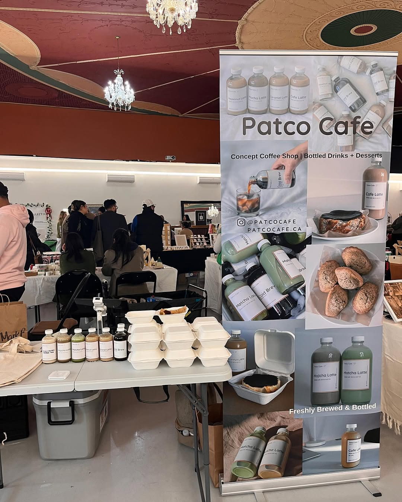

Pato Café – Where Coffee Meets Community 🌿
At Pato Café, coffee is our craft and community is our heartbeat. Every cup we serve is made with care, using only the finest beans, roasted to perfection and brewed with love. But what truly sets us apart is what happens around that cup — the conversations, the laughter, the connections. Nestled in the heart of the neighborhood, Pato Café is more than just a place to grab a cup of coffee — it's a vibrant gathering space where relationships are nurtured, creativity flows, and every visitor feels like part of something special.
Crafted with Care. Served with Heart
More than a coffee shop. A place to feel.
But what truly defines Pato Café is the community we’ve built around it. We believe in the power of human connection, and that’s why we’ve created a space that encourages conversation, collaboration, and celebration. Our café hosts regular social gatherings, live music nights, local artist showcases, and community events that bring people together in meaningful ways. It’s a place where ideas are exchanged, friendships are formed, and everyone is welcome.
More than a coffee shop. A place to feel.
At Pato Café, we don’t just serve coffee — we serve a sense of belonging. Whether you’re dropping in for a quick cup or staying a while to soak up the atmosphere, you’ll find that there’s always something brewing here — both in the cup and in the community. Come in, take a seat, and discover what makes Pato Café a local favorite. Great coffee. Genuine connections. Every day.